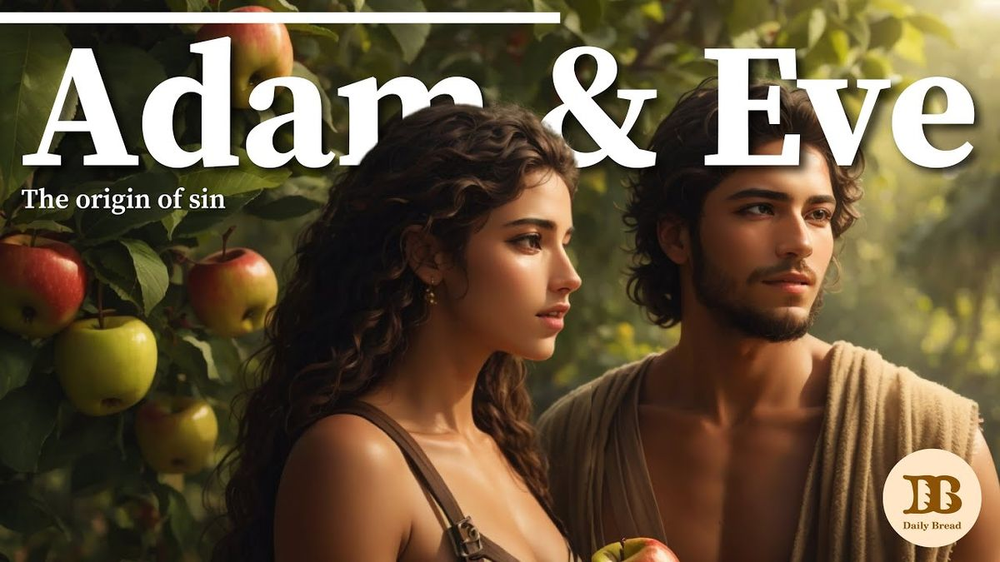
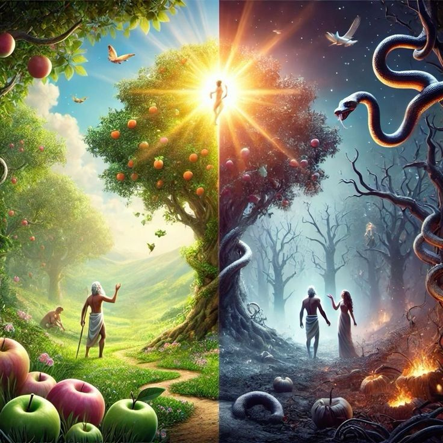
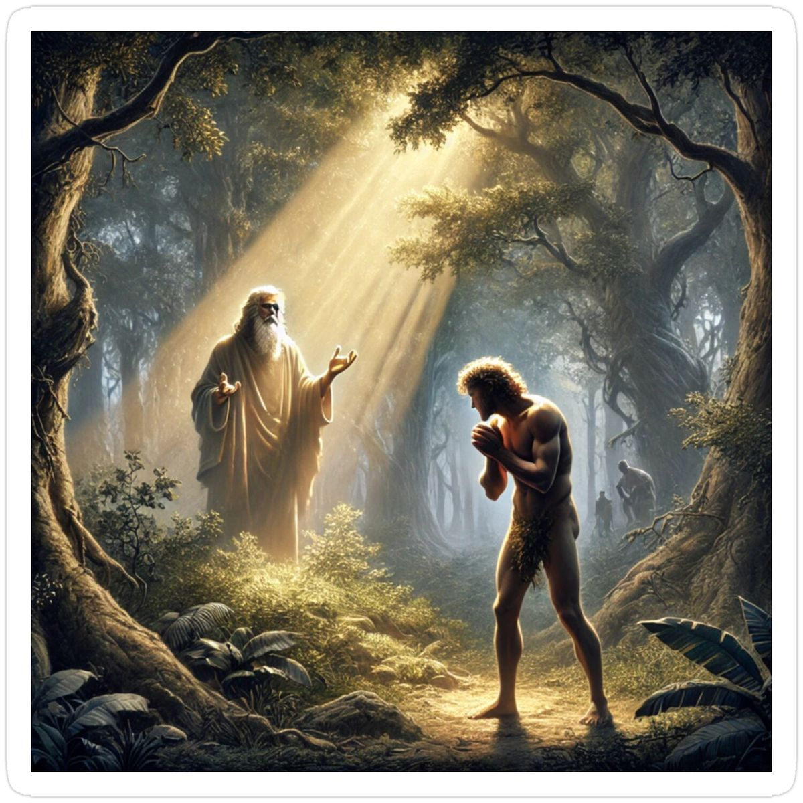
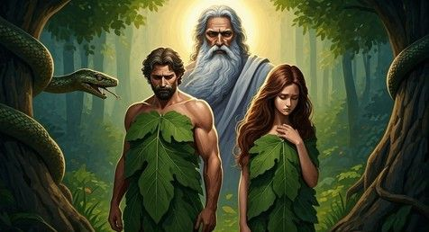
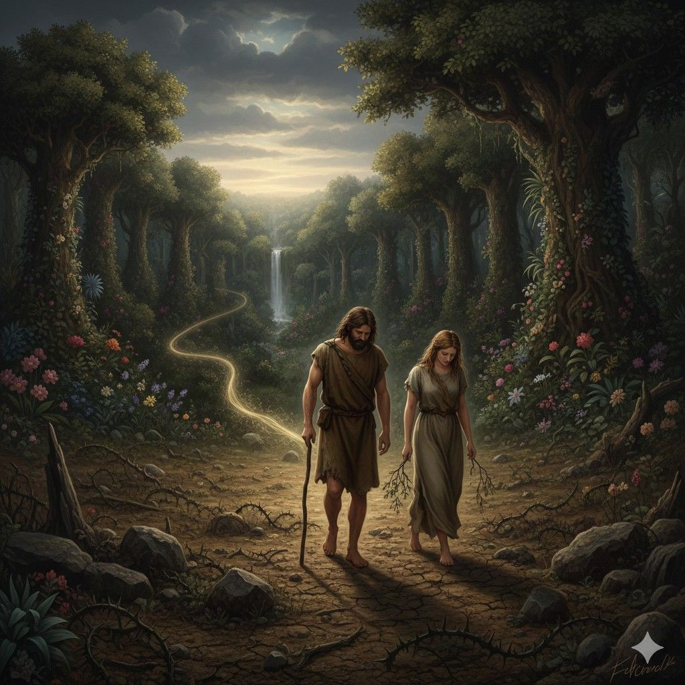

God’s Amazing Creation
The story of the first humans, Adam and Eve, is known to everyone. But it is not just a story — it is the truth that reveals the heart of God and the choices of man. The Bible says that this very event was the beginning of all the pain and suffering that humankind continues to experience even today. Yet, hidden within that story is also a message of love, mercy, and hope.
Adam and Eve
The Garden of Eden – God’s Beautiful Gift
ஏதேன் தோட்டம் – தேவனின் அழகான பரிசு
After God created the world, He made a beautiful garden. He called it the Garden of Eden. In that garden were all kinds of trees, delicious fruits, and clear rivers flowing gently. There was no sorrow, no pain, and no death — only perfect peace and joy.
தேவன் உலகை படைத்த பின்பு, அழகான ஒரு தோட்டத்தை உருவாக்கினார். அதை ஏதேன் தோட்டம் என்று அழைத்தார். அந்த தோட்டத்தில் எல்லா வகை மரங்களும், இனிய பழங்களும், தெளிந்த நீர் ஓடும் நதிகளும் இருந்தன. அங்கு துயரம், வலி, மரணம் எதுவும் இல்லை — முழுமையான அமைதி மற்றும் ஆனந்தம் மட்டுமே.
Adam
ஆதாம்
God created man in His own image and likeness. He called him Adam. God placed Adam in the Garden of Eden and gave him the responsibility to cultivate it and take care of it. Then God said: "It is not good for the man to be alone. I will make a helper suitable for him." God brought all the animals and the birds of the air to Adam. Adam gave a name to each one. But among them, there was no suitable companion for Adam.
தேவன் மனிதனை தன் உருவிலும், தன் சாயலிலும் படைத்தார். அவரை ஆதாம் என்று அழைத்தார். இறைவன் ஆதாமை ஏதேன் தோட்டத்தில் வைத்து, அதை பண்படுத்தவும் காக்கவும் பொறுப்பு கொடுத்தார். பின்னர் இறைவன் கூறினார்: "மனுஷன் தனிமையாயிருப்பது நல்லதல்ல; அவனுக்குத் தகுந்த துணையை உண்டாக்குவேன்." இறைவன் எல்லா விலங்குகளையும், ஆகாயப் பறவைகளையும் ஆதாமிடம் கொண்டு வந்தார். ஆதாம் ஒவ்வொன்றுக்கும் பெயரிட்டார். ஆனால் அவற்றில் எதுவும் ஆதாமுக்கு ஏற்ற துணையாக இல்லை.
God made a woman
இறைவன் ஒரு பெண்ணை உருவாக்கினார்.
Then God caused Adam to fall into a deep sleep. While he was sleeping, God took one of Adam's ribs and closed the place with flesh. From that rib, God made a woman and brought her to Adam. Adam joyfully said: "This is now bone of my bones and flesh of my flesh; she shall be called Woman, because she was taken out of Man." After this, the Bible says about marriage: "Therefore a man shall leave his father and his mother and be joined to his wife, and they shall become one flesh." Adam and Eve were both naked, yet they felt no shame. They lived in holiness, innocence, and without sin.
அப்போது இறைவன் ஆதாமை ஆழ்ந்த உறக்கத்தில் ஆழ்த்தினார். அவர் தூங்கிக்கொண்டிருக்கும்போது, அவரது விலா எலும்புகளில் ஒன்றை எடுத்து, அதன் இடத்தை மாம்சத்தால் மூடினார். அந்த விலா எலும்பிலிருந்து ஒரு பெண்ணை உருவாக்கி ஆதாமிடம் கொண்டு வந்தார். ஆதாம் மகிழ்ச்சியுடன் கூறினார்: "இவள் என் எலும்பில் எலும்பும், என் மாம்சத்தில் மாம்சமும் ஆவாள்; மனுஷனிலிருந்து எடுக்கப்பட்டபடியால் மனுஷி என்று அழைக்கப்படுவாள்." இதற்குப் பிறகு வேதாகமம் திருமணத்தைப் பற்றி கூறுகிறது: "ஆகையால் புருஷன் தன் தகப்பனையும் தாயையும் விட்டு, தன் மனைவியோடே இசைந்திருப்பான்; அவர்கள் ஒரே மாம்சமாயிருப்பார்கள்." ஆதாமும் ஏவாளும் இருவரும் நிர்வாணமாக இருந்தாலும், வெட்கப்படவில்லை. அவர்கள் பரிசுத்தமாகவும், பாவமில்லாதவர்களாகவும் வாழ்ந்தனர்.

God’s Command
தேவனின் கட்டளை
God said to them: “You may freely eat the fruit from any tree in this garden. But you must not eat from the tree of the knowledge of good and evil. If you eat from it, you will surely die.” Adam and Eve obeyed this command and submitted to God.
தேவன் அவர்களிடம் கூறினார்: “இந்த தோட்டத்தில் உள்ள எல்லா மரங்களிலும் நீங்களோ சுதந்திரமாக பழம் சாப்பிடலாம். ஆனால், நல்லதையும் கெட்டதையும் அறியச் செய்கிற மரத்தின் பழத்தை மட்டும் சாப்பிடக்கூடாது. அதிலிருந்து சாப்பிட்ட நாளில், நீங்கள் மரித்துவிடுவீர்கள்.” ஆதாம், ஏவாளும் அந்த கட்டளையை ஏற்று, தேவனுக்குக் கீழ்ப்படிந்தனர்.
The Serpent Deceived Eve
பாம்பு ஏவாளை ஏமாற்றியது
One day, the serpent, the most cunning of all the wild animals in the Garden of Eden, came to Eve and asked, "Did God really say, 'You must not eat from any tree in the garden'?" Eve replied, "We may eat the fruit from the trees in the garden. But God said, 'You must not eat the fruit from the tree that is in the middle of the garden, and you must not touch it, or you will die.'" Then the serpent said to her, "You will not surely die! For God knows that when you eat from it, your eyes will be opened, and you will be like God, knowing good and evil."
ஒரு நாள் ஏதேன் தோட்டத்தில் இருந்த எல்லா விலங்குகளிலும் மிகவும் தந்திரமான பாம்பு ஏவாளிடம் வந்தது. அது ஏவாளிடம் கேட்டது: "தேவன் உண்மையாகவே இந்தத் தோட்டத்தில் உள்ள எந்த மரத்தின் கனியையும் சாப்பிடக்கூடாது என்று சொன்னாரா?" அதற்கு ஏவாள் பதிலளித்தாள்: "தோட்டத்தில் உள்ள எல்லா மரங்களின் கனிகளையும் நாங்கள் சாப்பிடலாம். ஆனால் தோட்டத்தின் நடுவில் இருக்கும் மரத்தின் கனியை மட்டும் சாப்பிடக்கூடாது என்று தேவன் சொன்னார். அதைச் சாப்பிட்டாலோ, தொட்ந்தாலோ சாவோம் என்றார்." அப்போது பாம்பு அவளிடம் கூறியது: "நீங்கள் சாகவே மாட்டீர்கள்! அந்தக் கனியைச் சாப்பிடும் நாளில் உங்கள் கண்கள் திறக்கப்படும். நீங்கள் தேவனைப் போல நன்மை தீமையை அறிந்தவர்களாகிவிடுவீர்கள்."
The Serpent Deceived Eve
பாம்பு ஏவாளை ஏமாற்றியது
Eve looked at the tree. Its fruit seemed good for food, pleasing to the eye, and desirable for gaining wisdom. Believing the serpent's words, Eve took some of the fruit and ate it. Then she gave some to Adam, who was with her, and he also ate it. As soon as they had eaten the fruit, the eyes of both of them were opened, and they realized that they were naked. So they sewed fig leaves together and made coverings for themselves.
ஏவாள் அந்த மரத்தைப் பார்த்தாள். அதன் கனிகள் உண்பதற்கு நல்லதாகவும், பார்ப்பதற்கு அழகாகவும், அறிவைப் பெற விரும்பத்தக்கதாகவும் தோன்றின. பாம்பின் வார்த்தைகளை நம்பிய ஏவாள், அந்த மரத்தின் கனியைப் பறித்து சாப்பிட்டாள். பின்னர் தன்னுடன் இருந்த ஆதாமுக்கும் அந்தக் கனியைக் கொடுத்தாள்; ஆதாமும் அதைச் சாப்பிட்டார். அவர்கள் இருவரும் கனியைச் சாப்பிட்ட உடனே, தாங்கள் நிர்வாணமாக இருப்பதை உணர்ந்தனர். அதனால் அத்தி இலைகளைத் தைத்து தங்களுக்கு உடை செய்துகொண்டனர்.
God Searched for Them
தேவன் அவர்களைத் தேடினார்
In the cool of the evening, Adam and Eve heard the sound of the Lord God walking in the Garden of Eden. They became very afraid. Before this, they had enjoyed God's presence with joy. But now, because they had disobeyed God's command and sinned, they were filled with guilt and fear. So they hid among the trees of the garden. Then the Lord God called to Adam, "Adam, where are you?"
மாலை நேரத்தில் கர்த்தராகிய தேவன் ஏதேன் தோட்டத்தில் நடந்து வருகிற சத்தத்தைக் கேட்டவுடன், ஆதாமும் ஏவாளும் மிகவும் பயந்தார்கள். இதற்கு முன்பு அவர்கள் தேவனுடைய சந்நிதியில் மகிழ்ச்சியுடன் இருந்தார்கள். ஆனால் இப்போது, தேவனுடைய கட்டளையை மீறி பாவம் செய்ததால் அவர்களுடைய மனதில் குற்ற உணர்வும் பயமும் ஏற்பட்டது. அவர்கள் தோட்டத்திலிருந்த மரங்களுக்கிடையே சென்று ஒளிந்துகொண்டார்கள். அப்போது கர்த்தராகிய தேவன் ஆதாமை அழைத்து, "ஆதாமே, நீ எங்கே இருக்கிறாய்?" என்று கேட்டார்.

God Searched for Them
தேவன் அவர்களைத் தேடினார்
Adam answered, "I heard Your voice in the garden, and I was afraid because I was naked; so I hid myself." Then God asked, "Who told you that you were naked? Have you eaten from the tree that I commanded you not to eat from?" Instead of admitting his own wrongdoing, Adam blamed Eve. He said, "The woman whom You gave to be with me gave me some fruit from the tree, and I ate it." Then the Lord God said to Eve, "What is this that you have done?" Eve replied, "The serpent deceived me, and I ate."
ஆதாம் பதிலளித்தார்: "உம்முடைய சத்தத்தைத் தோட்டத்தில் கேட்டேன். நான் நிர்வாணமாய் இருப்பதால் பயந்து ஒளிந்துகொண்டேன்." அப்போது தேவன் கேட்டார்: "நீ நிர்வாணமாய் இருப்பதை உனக்கு யார் அறிவித்தது? நான் சாப்பிடக்கூடாது என்று கட்டளையிட்ட மரத்தின் கனியைச் சாப்பிட்டாயா?" ஆதாம் தன் தவறை ஒப்புக்கொள்ளாமல், ஏவாளைக் குற்றம் சாட்டினான். அவன் கூறினான்: "நீர் எனக்குத் துணையாகக் கொடுத்த பெண் அந்த மரத்தின் கனியை எனக்குக் கொடுத்தாள்; நான் சாப்பிட்டேன்." பிறகு கர்த்தராகிய தேவன் ஏவாளிடம் கேட்டார்: "நீ என்ன செய்தாய்?" அதற்கு ஏவாள்: "பாம்பு என்னை வஞ்சித்தது; அதனால் நான் சாப்பிட்டேன்." என்று பதிலளித்தாள்.

The Consequence of Sin
பாவத்தின் விளைவு
First, the Lord God said to the serpent: "Because you have done this, you are cursed above all livestock and all wild animals. You will crawl on your belly, and you will eat dust all the days of your life." Then He said: "And I will put enmity between you and the woman, and between your offspring and hers. He will crush your head, and you will strike His heel." Then God said to Eve: "I will greatly increase your pain in childbearing; with painful labor you will give birth to children. Your desire will be for your husband, and he will rule over you." After that, God said to Adam: "Because you listened to your wife and ate from the tree about which I commanded you, 'You must not eat from it,' cursed is the ground because of you. Through painful toil you will eat from it all the days of your life. It will produce thorns and thistles for you, and you will eat the plants of the field. By the sweat of your brow you will eat your food until you return to the ground, because from it you were taken; for dust you are, and to dust you will return."
முதலில் கர்த்தராகிய தேவன் பாம்பிடம் கூறினார்: "நீ இதைச் செய்ததால் எல்லா விலங்குகளிலும் சபிக்கப்பட்டவனாய் இருப்பாய். இனி உன் வயிற்றால் ஊர்ந்து செல்வாய்; உன் வாழ்நாள் முழுவதும் மண்ணைத் தின்பாய்." மேலும் அவர் கூறினார்: "உனக்கும் பெண்ணுக்கும், உன் சந்ததிக்கும் அவள் சந்ததிக்கும் பகை இருக்கும். அவளுடைய சந்ததி உன் தலையை நசுக்கும்; நீ அவருடைய குதிகாலைக் கடிப்பாய்." பின்னர் தேவன் ஏவாளிடம் கூறினார்: "கர்ப்ப வேதனையை அதிகப்படுத்துவேன். வேதனையோடு பிள்ளைகளைப் பெறுவாய். உன் கணவனை விரும்புவாய்; அவன் உன்மேல் ஆட்சி செய்வான்." அதன்பின் ஆதாமிடம் தேவன் கூறினார்: "நீ உன் மனைவியின் பேச்சைக் கேட்டு, நான் சாப்பிடக்கூடாது என்று கட்டளையிட்ட மரத்தின் கனியைச் சாப்பிட்டதால், உன் காரணமாக நிலம் சபிக்கப்பட்டது. இனி உன் வாழ்நாள் முழுவதும் கடினமாக உழைத்தே உணவைப் பெறுவாய். நிலம் உனக்காக முட்களையும் முட்புதர்களையும் விளைவிக்கும். உன் முகத்தின் வேர்வையால் அப்பத்தை உண்ணுவாய். நீ மண்ணிலிருந்து எடுக்கப்பட்டவன்; ஆகையால் மண்ணுக்கே திரும்புவாய்."
Lord God, in His compassion
தேவனுடைய இரக்கம்
After they had sinned, Adam named his wife Eve. The name "Eve" means "life" or "mother of all living." She was given this name because she would become the mother of all people who would be born into the world. Adam and Eve realized that they were naked and sewed fig leaves together to make clothing for themselves. However, those coverings were not sufficient. Then the Lord God, in His compassion, made garments of animal skins and clothed them. Even though Adam and Eve had disobeyed God and sinned, He did not completely abandon them. Knowing their need, He provided clothing for them, showing His love, mercy, and care.
பாவம் செய்த பிறகு ஆதாம் தன் மனைவிக்கு ஏவாள் என்று பெயரிட்டான். "ஏவாள்" என்ற பெயருக்கு உயிர் அல்லது உயிருள்ளவர்களின் தாய் என்று பொருள். உலகில் பிறக்கப்போகும் எல்லா மனிதர்களுக்கும் அவளே தாயாக இருப்பாள் என்பதால் அந்தப் பெயர் வைக்கப்பட்டது. ஆதாமும் ஏவாளும் தாங்கள் நிர்வாணமாக இருப்பதை உணர்ந்து, அத்தி இலைகளைத் தைத்து உடை செய்துகொண்டார்கள். ஆனால் அந்த உடைகள் போதுமானதாக இல்லை. அப்போது கர்த்தராகிய தேவன் அவர்கள்மேல் இரக்கம் கொண்டு, ஒரு மிருகத்தின் தோலால் ஆடைகளைச் செய்து அவர்களுக்கு அணிவித்தார். அவர்கள் தேவனுக்குக் கீழ்ப்படியாமல் பாவம் செய்திருந்தாலும், தேவன் அவர்களை முற்றிலும் கைவிடவில்லை. அவர்களுடைய தேவையை அறிந்து, அவர்களுக்கு உடை கொடுத்து அன்பையும் கருணையையும் வெளிப்படுத்தினார்.
out of the Garden of Eden.
ஏதேன் தோட்டத்திலிருந்து வெளியே
It was not God's plan for mankind to live forever in a sinful condition. Therefore, God decided to send Adam and Eve out of the Garden of Eden. After driving them out of the garden, God stationed mighty cherubim at the east side of the Garden of Eden. Along with them, He placed a flaming sword flashing back and forth to guard the way to the Tree of Life, so that no one could approach it.
பாவ நிலையில் மனிதன் என்றென்றும் வாழ்வது தேவனுடைய திட்டம் அல்ல. அதனால், தேவன் ஆதாமையும் ஏவாளையும் ஏதேன் தோட்டத்திலிருந்து வெளியே அனுப்ப முடிவு செய்தார். தேவன் அவர்களை தோட்டத்திலிருந்து வெளியேற்றிய பிறகு, ஏதேன் தோட்டத்தின் கிழக்குப் பகுதியில் வல்லமையுள்ள கேருபீன்களை நிறுத்தினார். அவர்களுடன் எல்லாத் திசைகளிலும் சுழன்று ஒளிரும் அக்கினிப் பட்டயத்தையும் வைத்தார். ஜீவ விருட்சத்திற்குச் செல்லும் வழியை யாரும் அணுக முடியாதபடி அவர்கள் காவல் காத்தனர்.

entered human life
குடும்ப வாழ்க்கை
Adam and Eve had to leave the beautiful garden and the peaceful life they had enjoyed there. From then on, they had to earn their food through hard work. Adam began to cultivate the ground and grow crops for a living. Toiling and sweating became a part of his daily life. Eve also had to face pain and hardships in her family life. Thus, according to the Bible, as a result of sin, suffering, hard labor, sickness, and death entered human life.
அவர்கள் வாழ்ந்த அழகான தோட்டத்தையும், அங்கிருந்த அமைதியான வாழ்க்கையையும் விட்டு வெளியேற வேண்டிய நிலை ஏற்பட்டது. இனி அவர்கள் தங்கள் உழைப்பினால் உணவைப் பெற்றுக்கொள்ள வேண்டியிருந்தது. ஆதாம் மண்ணை உழுது பயிர் செய்து வாழத் தொடங்கினார். வேர்வை சிந்தி உழைப்பதே அவருடைய அன்றாட வாழ்க்கையாக மாறியது. ஏவாளும் வேதனையுடனும் கஷ்டங்களுடனும் குடும்ப வாழ்க்கையை நடத்த வேண்டிய நிலை ஏற்பட்டது. இவ்வாறு பாவத்தின் விளைவாக மனித வாழ்க்கையில் துன்பம், உழைப்பு, நோய், மரணம் போன்றவை நுழைந்தன என்று வேதாகமம் கூறுகிறது.